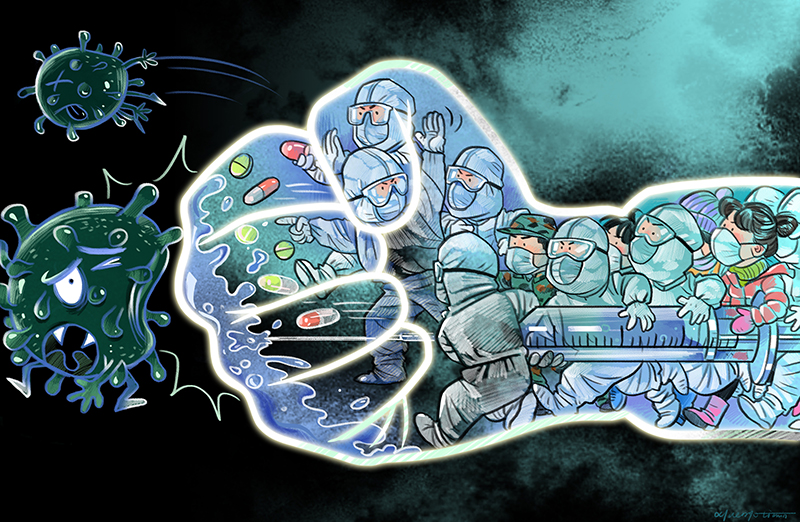
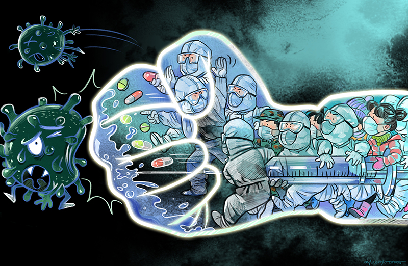

Is Covid-19 Preventable or Treatable?
Covid-19 is Preventable. However, there is no known cure as of yet. The disease affects individuals differently and most recover on their own. There is currently no available vaccine for COVID-19. However, many of the symptoms can be treated and getting early care from a healthcare provider can make the disease less dangerous. There are several clinical trials that are being conducted to evaluate potential cure for COVID-19.
Some of the prevention measure as well as control measures for the spread of the coronavirus are common words we have heard of in daily news. Words such as Social Distancing, Sanitizers and quarantine. We at CoYouth19 will break them down to simple ways that you, your family and your friends can do to prevent and control the spread of the pandemic while keeping your community safe. Remember to also help those in need around you as you follow the measures below.
Everyone Should:
Wash your hands often (Sanitizers, HandWash & Soaps)
- Wash your hands often with soap and water for at least 20 seconds especially after you have been in a public place, or after blowing your nose, coughing, or sneezing.
- If soap and water are not readily available, use a hand sanitizer that contains at least 60% alcohol. Cover all surfaces of your hands and rub them together until they feel dry.
- Avoid touching your eyes, nose, and mouth with unwashed hands. Only touch them with clean dry hands to avoid spread of the virus as well as other potential germs that we pick up on our hands during daily activities.

Avoid close contact (Social Distancing)
Social distancing, also called “physical distancing”, means keeping space between yourself and other people outside of your home. Limiting face-to-face contact with others is the best way to reduce the spread of coronavirus disease 2019 (COVID-19).
- Avoid close contact with people who are sick, even inside your home. If possible, maintain 6 feet between the person who is sick and other household members.
- Put distance between yourself and other people outside of your home.
- Remember that some people without symptoms may be able to spread virus.
- Stay at least 6 feet (about 2 arms’ length) from other people. Keeping distance from others is especially important for people who are at higher risk of getting very sick i.e elderly people, sick people and those with pre-existing medical conditions such as heart, respiratory and immune conditions.


Cover your mouth and nose (Face Masks)
I know you've seen them around. It's the newest fashion in every town, right? Cover your mouth and nose with a cloth face cover when around others. Everyone should wear a cloth face cover when they have to go out in public, for example to the shop or to pick up other necessities. The cloth face cover is meant to protect other people in case you are infected. Remember, You could spread COVID-19 to others even if you do not feel sick.
Mask-Wearing Reminders:
- Cloth face coverings should not be placed on young children under age 2, anyone who has trouble breathing, or is unconscious, incapacitated or otherwise unable to remove the mask without assistance.
- Do NOT use a facemask meant for a healthcare worker. This would deny others their services and put others, including healthcare workers at risk. Please be mindful.
- Continue to keep about 6 feet between yourself and others. The cloth face cover is not a substitute for social distancing. Don't let your guard Down even for a moment, especially when out in public.
- The Masks are supposed to be worn fully covering the nose and mouth. This means that they should start at the bridge of your nose, below the middle of the eyes, to your jawline. Wearing it otherwise, or partrially is not safe and puts you at risk of contracting or spreading the virus.
Extra: CoYouth19 Art Heroes
Are you an art addict? Then this might just be your lucky day. Reach out to us in our Contacts below to learn more of this.
With all the gloom all around arising from the daily bad news and the economy tumbling down, CoYouth19 has another program that engages youths across the city to give glimpses of hope to the masses. If you are a good artist or even a new-age street artist, we provide you with the tools of trade to inspire a little cheer and hope to the masses. Art has long been known to inspire and move people down to their core beliefs throughout history. Frown the rennaisance artists of the past in Italy (Da Vinci to Michaelangelo), to poetic images of rebbelions and wars in France and Russia (Starlingard and the French Revolution), to monuments of peace, liberty and love in India (Taj Mahal) and the United States (Statue of liberty). art is there to be seen and also have influence on the human soul.
Here are some of our street art in the city mixed with street art from other parts of the world. See any familiar face that has an attitude with a crazy voice :-) Hint, it rhymes with Birdy. Enjoy the gallery below and remember to Keep Safe, Save Lives!

 
